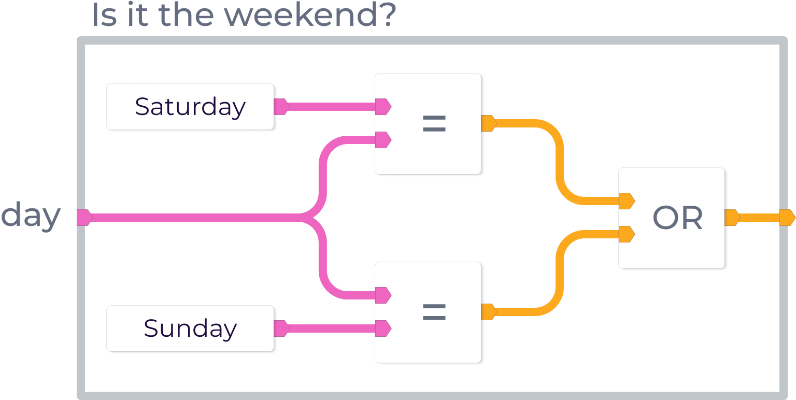
Lynxtool's aim is to help non-programmers process complex data by
showing them what is going on. Instead of having to simulate the
effects of code in their heads, we draw it out for them.
How do we show "What-ifs"?
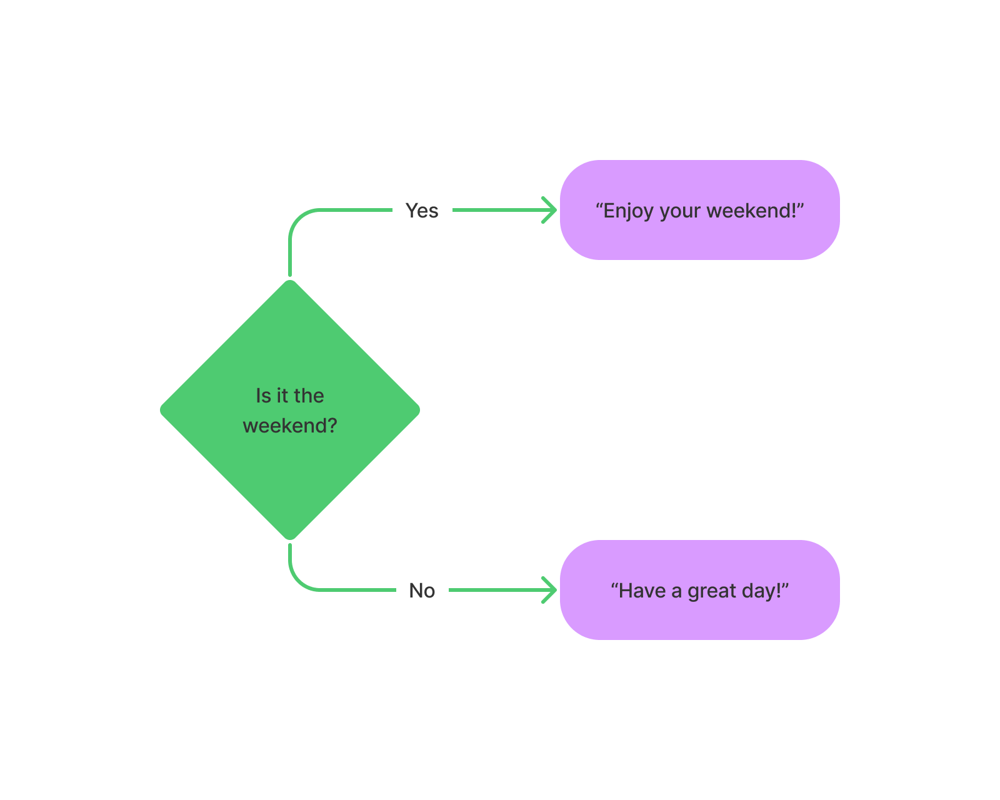
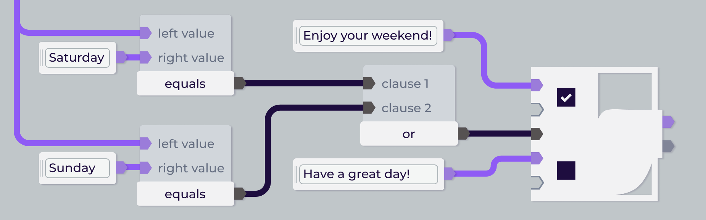
Can you understand all that without an explanation?
As the a basic part of computation our conditional node should be
simple but was not. It was confusing because there's too many things
to plug into and coming out of it.
.
Why do we have so many inputs?
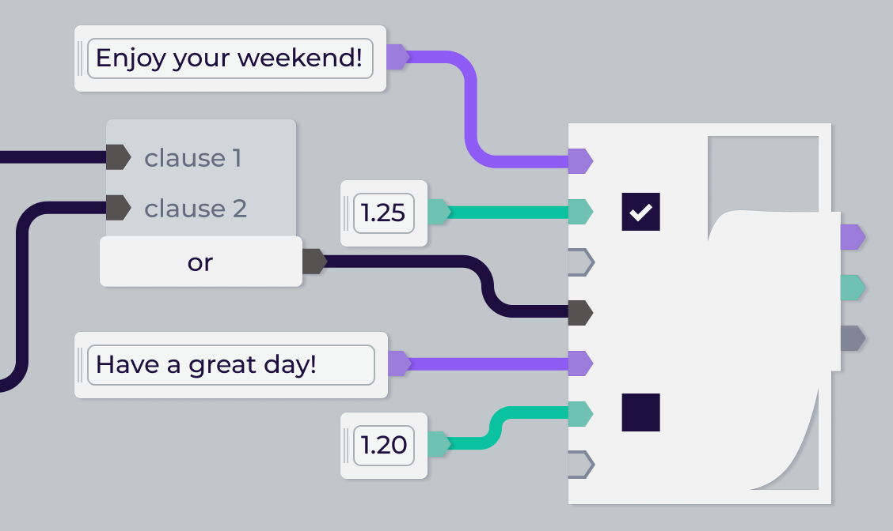
Same idea, different expression
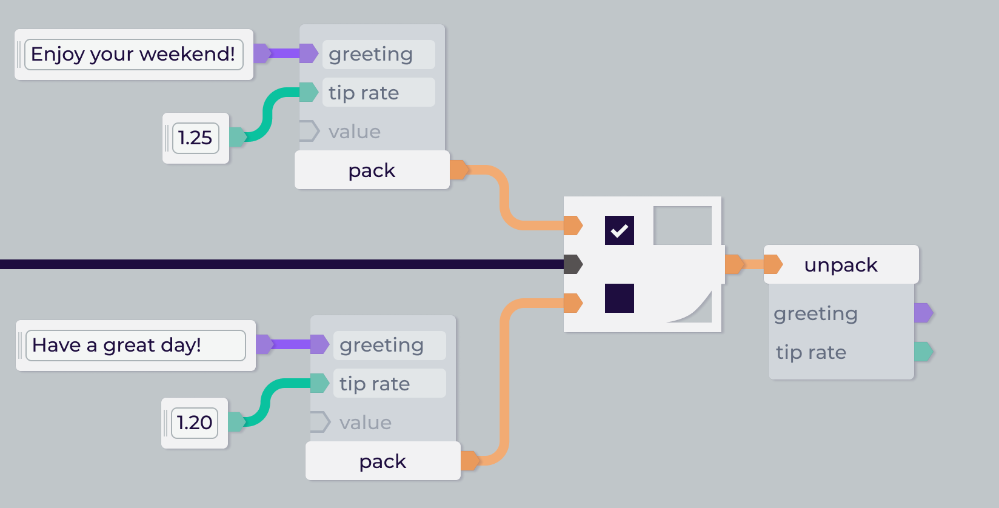
With this in mind, we can just focus on making a better 3-input
conditional node.
Design @ Lynxtool
Alice & stakeholder will define the problems
With the whole team, we will brainstorm ideas
Alice will go through iterations to refine our best ideas
Brainstorm
Ideas from before my time
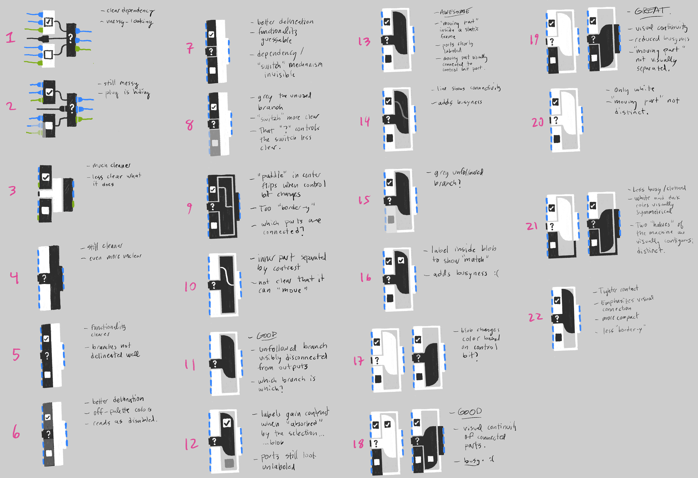
Ideas shared at brainstorm
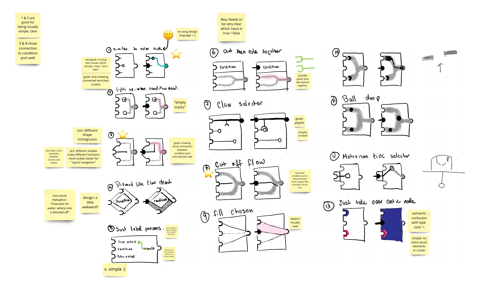
New ideas that came up during our jam
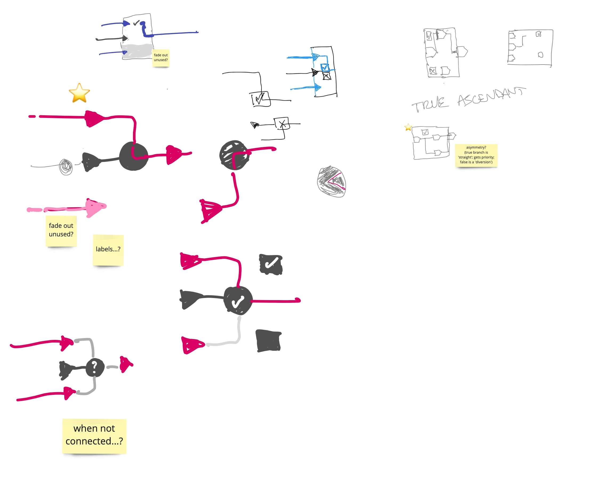
Refine idea visually
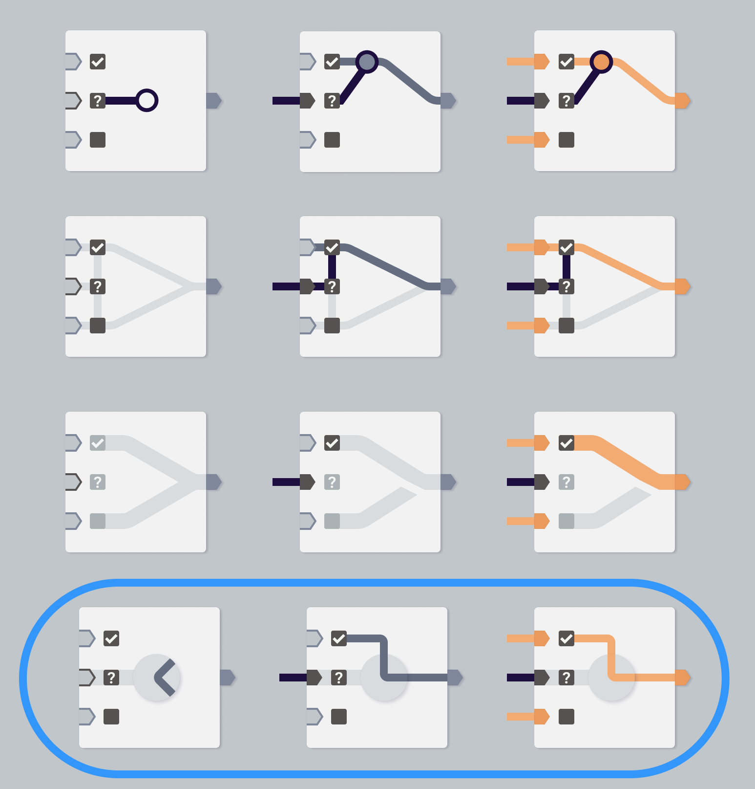
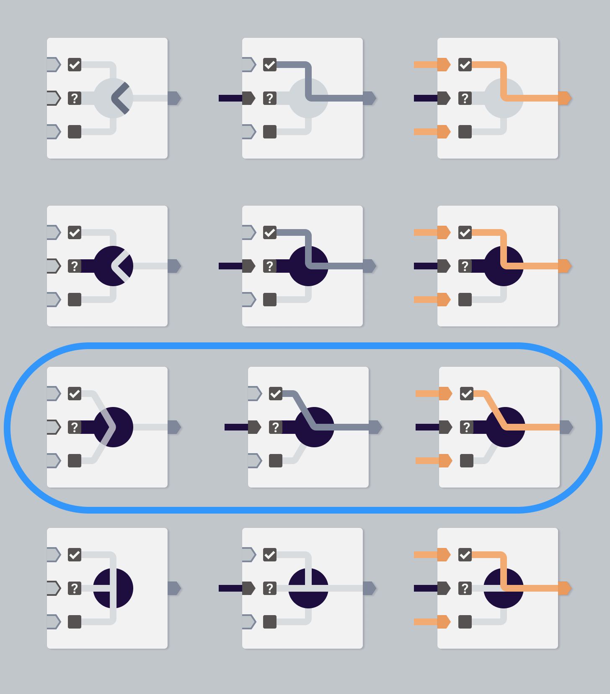
We found the one where they all meet at 60 degrees to be neat.
Chosing colors
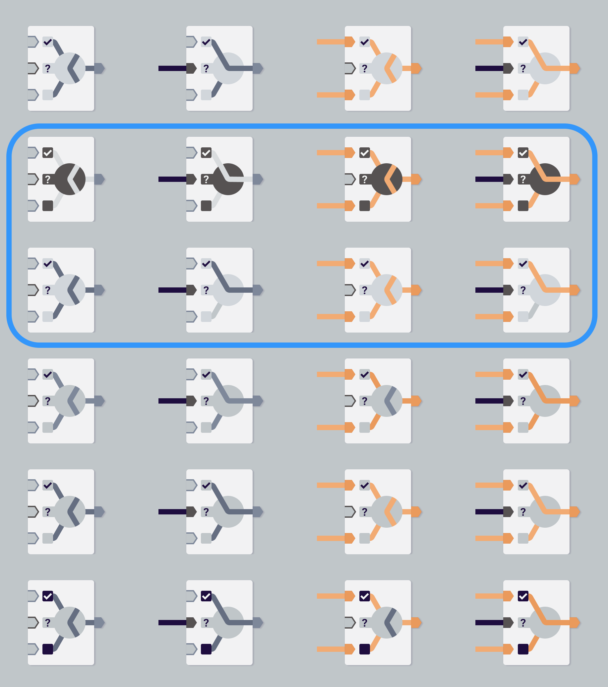
Testing our colors against data types
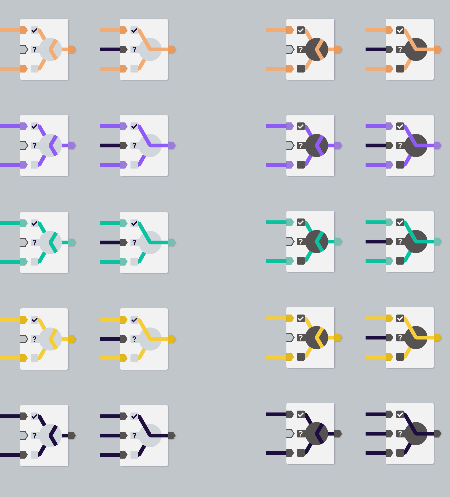
Final designs
Implementation
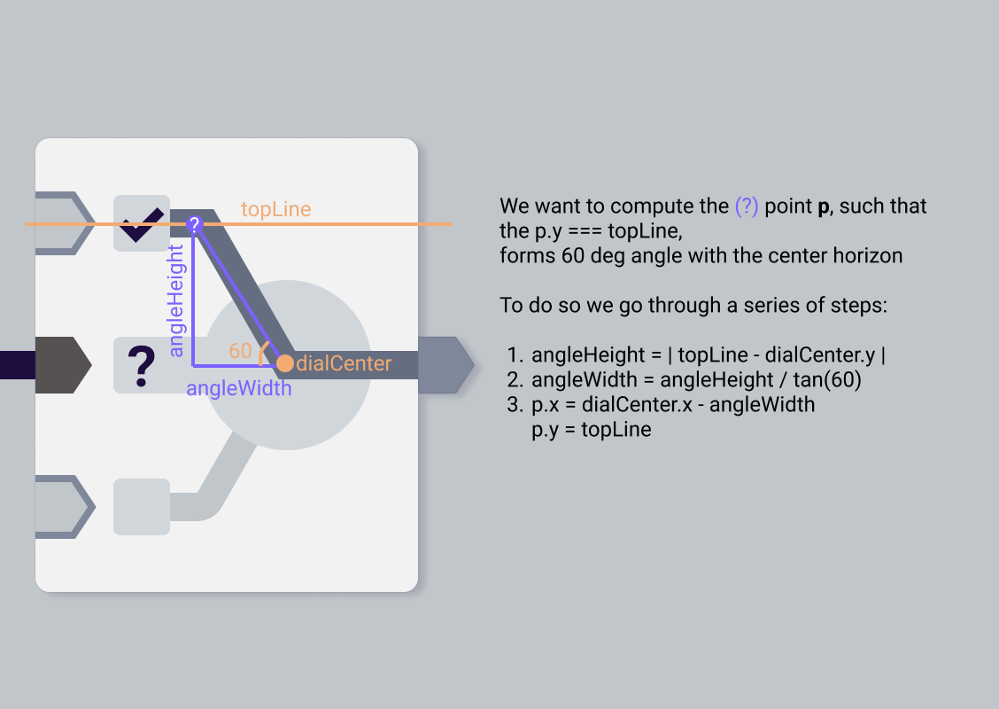
Retrospective
The empty state can still be a little confusing.
If I had known I'll be the one implementing it, I'd spend less
time iterating through the states for each approach.